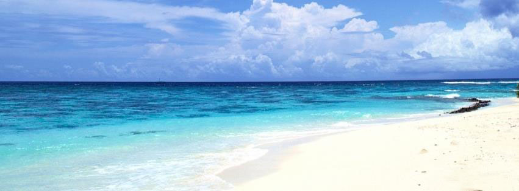

White sandy beaches, crystal clear blue sea, brilliant underwater world... Redang archipelago comprises 9 islands (Lima Island, Paku Besar Island, Paku Kecil Island, Kerengga Besar Island, Kerengga Kecil Island, Ekor Tebu Island, Ling Island, Pinang Island and the main Redang Island) that abound with marvelous marine fishes, turtles and coral reefs that ensure great snorkelling and scuba-diving. Ping Anchorage package tours from camping to luxury beach resort, the choice - is always yours !
The prestigious Malaysia Tourism Awards introduced in 1987 by the Ministry of Culture, Arts and Tourism through Tourism Malaysia, is tribute to those who excel in the development of tourism in Malaysia. It also acts as an incentive for participants to strive for the highest level of professionalism in both service and product quality. The Malaysia Tourism Awards, the ultimate symbol of recognition for awards recipients, is the highest accolade for individuals and organizations whose outstanding contributions play a significant role in the success of Malaysia's Tourism Industry.
This Award gives recognition to the operators who have the most outstanding record in selling and promoting Malaysia.
This Award is to the best tour package offered by inbound tour operators registered in Malaysia.
Call Us Now!